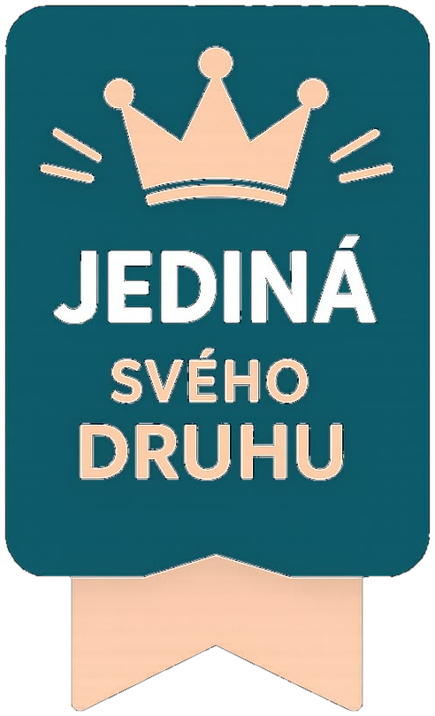

Hlídání STK, pojištění, známek, pokut a dokladů na jednom místě.
Krok za krokem: záznam, asistence i pojišťovna.
Co vám hrozí, jak postupovat a kdy se ozvat. Obsah aktualizujeme průběžně.

První právní asistent, který orientačně vyhodnotí riziko řízení po užití alkoholu nebo drog a ukáže, co řidiči reálně hrozí a jak postupovat dle jeho priorit.
Po–Ne 8:00–22:00 · 365 dní v roce
Aktuální články a tipy pro řidiče.
Návod, jak mít appku jako běžnou aplikaci.
Body, zprávy a práh upozornění
Zvětší text v celé aplikaci. Nastavení zůstane v tomto telefonu.
Přesný počet bodů řidiče zjistíte třemi způsoby:
Online, s bankovní identitou nebo datovou schránkou.
Na poště nebo úřadě proti dokladu totožnosti.
Osobně na odboru dopravy dle trvalého bydliště.
Ozveme se vám neprodleně. Posouzení je zdarma a nezávazné.
Zaplatíte jednou, přístup máte navždy — celý průvodce, kalkulačky a prioritní konzultace. Jednorázově 999 Kč.
Platbu vyřizuje Stripe. Číslo karty se k nám nedostane.
Děkujeme, že používáte Práva řidiče. S aplikací na ploše nás budete mít vždy po ruce — na celou obrazovku a s upozorněními na váš bodový stav.